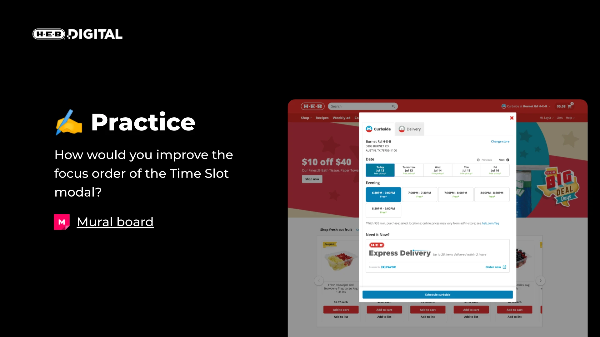

The Challenge
During COVID-19, when customers with disabilities couldn't safely shop in stores, our digital products—which should have been their lifeline—were excluding them.
The problems were systemic
- No accessibility standards or testing processes
- Limited awareness of why it mattered
- Screen reader users couldn't complete checkout
- Color contrast failed throughout the app
My Approach
I saw an opportunity to build something from nothing. Rather than trying to fix everything at once, I focused on proving value, building grassroots support, and creating infrastructure that could scale.
Proved the value
Piloted user research with Fable's platform, connecting our team with real assistive technology users. Watching a screen reader user struggle through checkout was more powerful than any compliance argument.
Built grassroots support
Started weekly office hours where designers and developers could learn together. Partnered with a passionate developer to co-lead. Created a safe space to build capability across the team.
Educated the organization
Didn't lead with compliance — I led with people. When teams understood their work affected whether customers could feed their families, they started caring deeply about quality.
Established strategic direction
Worked with Design System PM and Lead Engineer to research vendors and create a formal roadmap. Left with leadership ready to invest in accessibility as a strategic priority.
What I Built
A design system teams could actually use
Designers could now ship accessible components by default — color contrast, focus states, and screen reader patterns were built into the system, not bolted on after.
Removing the barriers that mattered most
Screen reader users could complete checkout independently for the first time. Hundreds of violations resolved across web and mobile.
A culture that outlasted the program
Weekly office hours became the go-to resource for accessibility questions across design and engineering — adoption spread because people genuinely cared, not because it was mandated.

Focus Order Workshop: A hands-on group exercise where designers analyzed and improved keyboard navigation in H-E-B's checkout flow. Watching teams internalize accessibility principles in real time was more effective than any compliance mandate.
Impact
Screen reader users could finally complete checkout independently. Color contrast met WCAG 2.1 AA standards across the design system. Hundreds of accessibility violations resolved across web and mobile.
Cultural shift: Designers proactively presented accessible options; change spread organically. Cross-functional collaboration strengthened through office hours.
Lasting foundation: Created infrastructure and processes that could scale beyond any one person. Left leadership ready to invest in accessibility as a strategic priority, not just a compliance checkbox.
This work directly led to a contract with Figma, where I evaluated Figma and competitor workflows with assistive technology users and delivered a prioritized accessibility gap analysis and long-term strategy recommendations to their product team.
Building something from nothing and watching a team embrace inclusive design because they genuinely cared — that's the kind of systemic impact I bring to every engagement.